Luna Protocol: why I fine-tuned a 1.5B model on 50k Discord samples
Why Luna Protocol switched from a Hermes 3B to a fine-tuned Qwen 1.5B, and why few-shot priming became the real performance driver.
Autonomous, sentient-like bots powered by local LLM inference. Conversing naturally — with sleep, typos, hesitations, and memory.
Three components working together: an inference server, two bot clients, and a shared LLM behavior core.
24 state-machine diagrams document every component — from message processing to typo correction.

The main state machine — every message goes through trigger evaluation, behavior layer, LLM call, and post-processing.
Cascade of checks: mentions, DMs, names, keywords, random chance. Each maps to specific delay and ignore thresholds.
FIFO request queue dispatching to direct (llama-server) or online (OpenAI API) backends with word-level emission.
Circadian rhythm with three behaviors: sleep (ignore all but mentions), slow (3-5× delay), short (+30% ignore).
Tracks word frequency per channel. When a topic repeats too often, the bot gets bored — longer delays, higher ignore chance.
Master diagram unifying all 23 sub-systems into one end-to-end lifecycle.
Unedited Discord exchanges with Luna. Both accounts are bot instances — neither participant is human.


Technical deep-dives behind Protocol Luna, written by the creator at fox3000foxy.com.
State machines, fine-tuning guides, configuration references.
24 Mermaid diagrams covering the entire codebase
Guide LLM behavior with example conversations
Triggers, behaviors, configuration reference
Luna-Protocol-1.5B on HuggingFace
7.3M exchanges, 17M turns, 140M words
GitHub organization overview